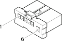

H005C Stalk unit ( FACIA )
- Path
- Electrical equipment > 3 Connectors > H Manual electric controls > H5 Stalk unit > H005C Stalk unit ( FACIA )
- Kind
- connector pinout (pin -> wire colour -> other end)
- Applies to
- all engines; all production periods
- Interactive page
- https://sloeber94.github.io/elrnDB-fMltpl/en/#/2890368
Applies to: all engines; all production periods

Wiring | Colour |
|---|---|
BIANCO (white) |
Topics linked from this page (4)
- 20 FACIA
- B001H Junction unit ( FACIA )
- H090A Switch control unit ( FACIA )
- H090B Switch control unit ( FACIA )
Topics that link to this page (20)
- 5550A12 complete stalk unit - r+r for versions with air bag
- B001H Junction unit ( FACIA )
- B001H Junction unit ( FACIA )
- B001H Junction unit ( FACIA )
- B001H Junction unit (FACIA)
- B001H Junction unit (FACIA)
- B001H Junction unit (FACIA)
- B001H Junction unit (FACIA)
- B001H Junction unit (FACIA)
- B001H Junction unit (FACIA)
- B001H Junction unit (FACIA)
- B001H Junction unit (FACIA)
- H090A Switch control unit (FACIA)
- H090A Switch control unit (FACIA)
- H090A Switch control unit (FACIA)
- H090B Switch control unit ( FACIA )
- H090B Switch control unit (FACIA)
- J045 Dipped beam maintenance relay ( FACIA )
- J045 Dipped beam maintenance relay (FACIA)
- J045 Dipped beam maintenance relay (FACIA)